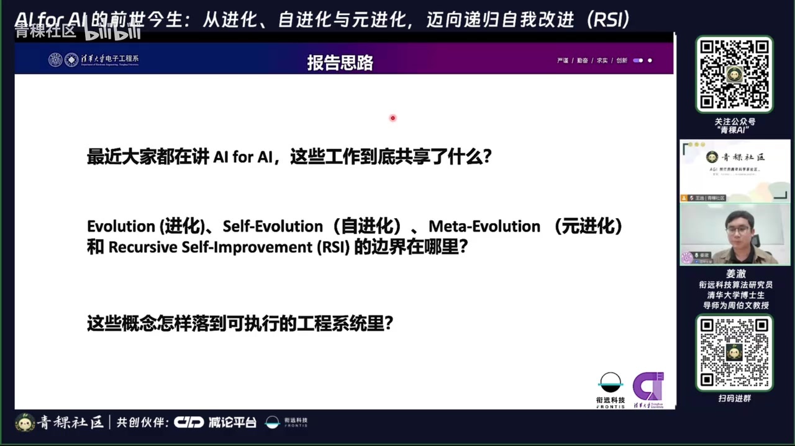
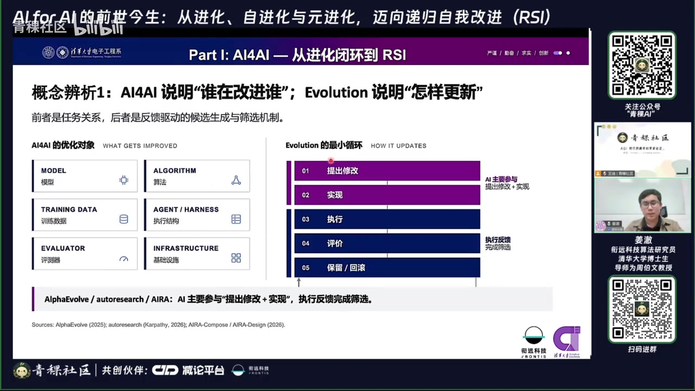
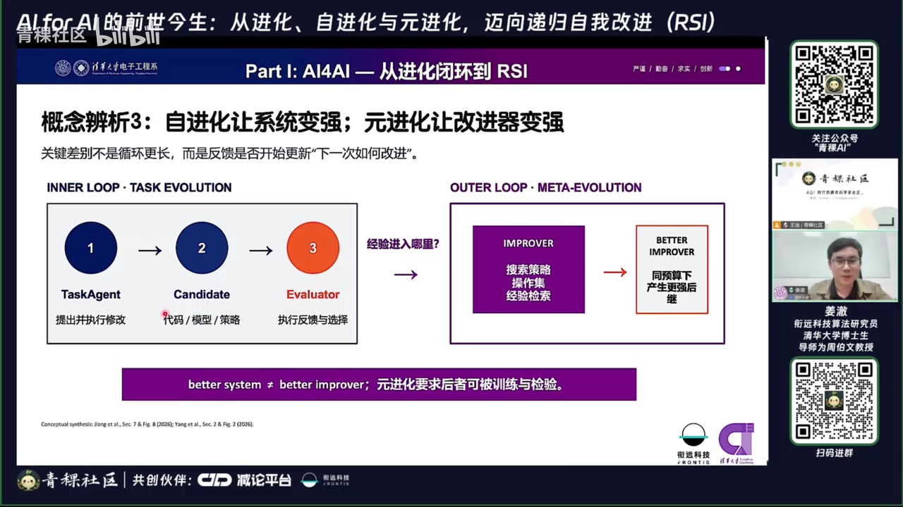
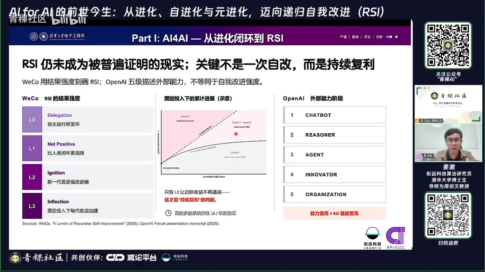
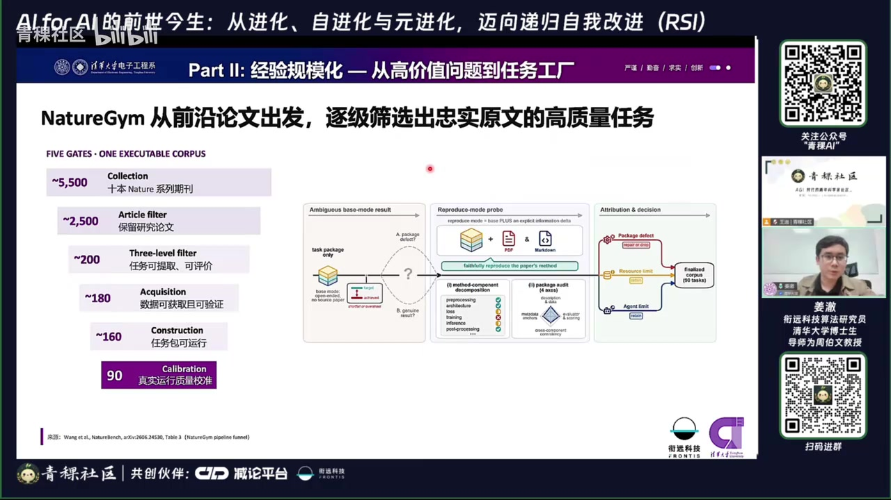
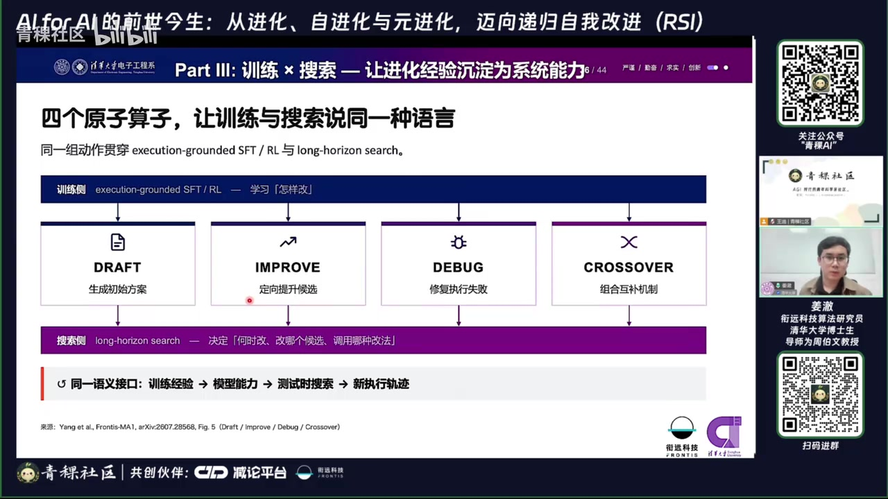
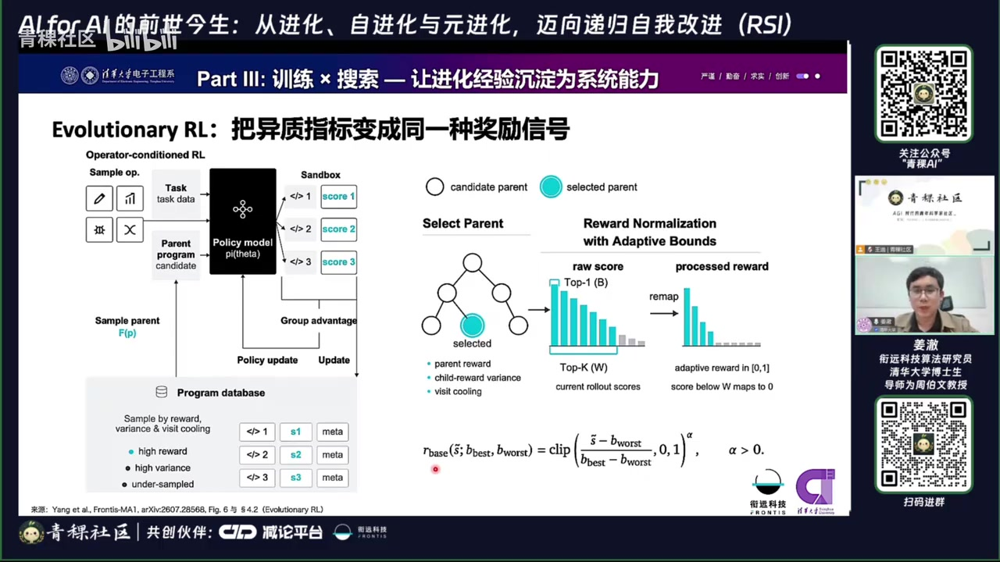
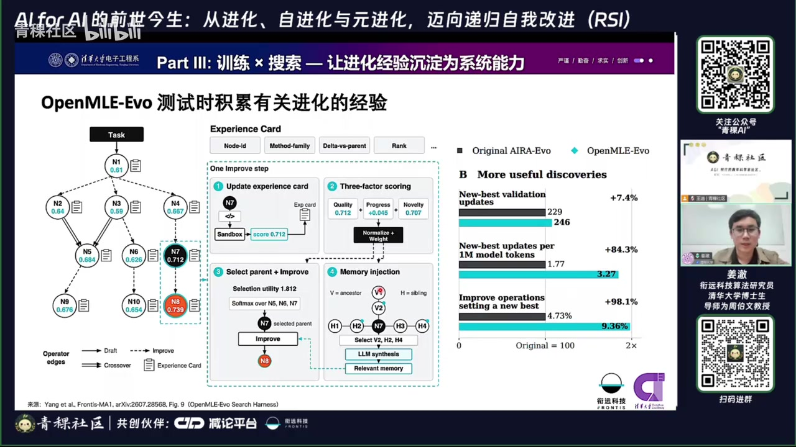
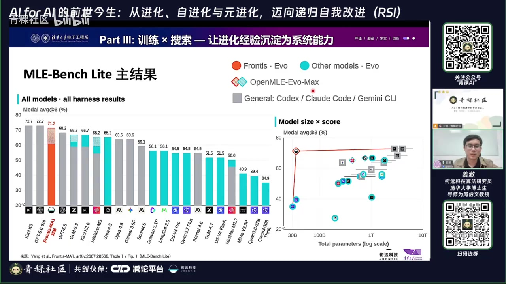
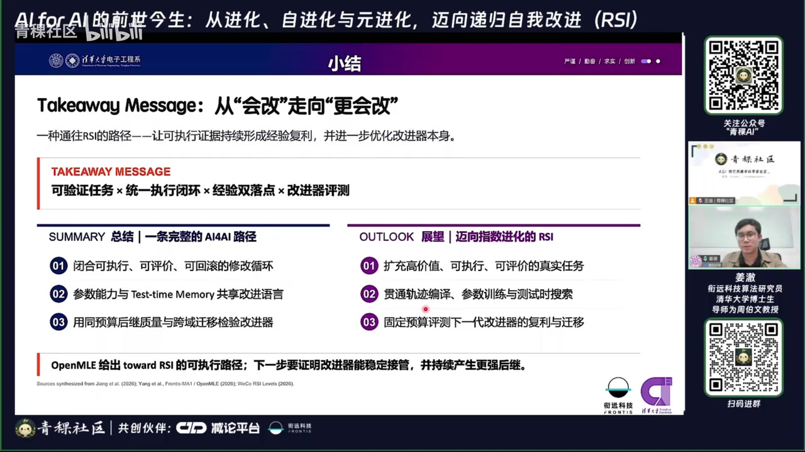

01结论先行
报告的核心不是“让 AI 多循环几轮”，而是把可执行、可评价的改进轨迹沉淀为可复用经验。自进化让任务系统越用越强；元进化进一步让改进器本身变强；只有升级后的改进器能接管下一轮并持续产生更强后继，才真正接近递归自我改进（RSI）。
只有修改—执行—评价，却没有经验回流，等价于反复刷题但不做错题本。
一次找到更好的系统只证明搜索有效，不代表下一轮改进能力变强。
高价值、可执行、可评价、可追溯，是大规模收集改进轨迹的前提。
相同的原子操作让训练经验、模型能力、测试时搜索和新轨迹形成闭环。
不仅要比较各代系统的绝对分数，还要看下一代改进器是否在同等资源下改得更快、迁移更稳，并能继续接管后续改进。

02四个层次：谁在改、怎样改、经验落哪、改进器是否升级
回答“谁在改进谁”：AI 实质性参与模型、算法、数据、Agent、评测器或基础设施的构建。
在单任务内反复提出修改、实现、执行、评价、保留或回滚，产出更好候选解。
把任务经验回流到未来系统，沉淀为内容、机制或模型参数。
学习“如何进化”，更新搜索策略、操作集合、经验检索与组织方式。
更强改进器接管下一轮并持续产生更强后继；尚未被普遍证明实现。
| 概念 | 判别问题 | 反馈最终落点 |
|---|---|---|
| AI4AI | AI 是否实质参与另一个 AI 系统的构建或改进？ | 模型、算法、训练数据、Agent/Harness、Evaluator、Infrastructure |
| Evolution | 候选是否经过真实执行、评价与筛选？ | 更好的当前候选 |
| Self‑Evolution | 本轮经验是否进入未来任务系统？ | Skill / Memory、工作流、工具结构、模型参数 |
| Meta‑Evolution | 反馈是否更新“下一次怎样改”？ | 搜索策略、操作集合、经验检索与更强 Improver |
| RSI | 升级后的 Improver 能否接管下一轮并稳定复利？ | 连续的、更强且更高效的后继 |


03RSI 的强判据与经验落盘
3.1 RSI 不是一次自改，而是可持续复利
固定或可比预算下，下一代系统不仅更强，还要能更快、更有效地创造其后继；改进投入应小于后续增益或节省。

3.2 经验的三个落点
内容与机制资产
- 内容：Skill、Memory、知识、操作模板
- 机制：策略、工作流、工具调用结构
- 治理：经验筛选、修订、冲突处理与淘汰
参数资产
- 把稳定产生的高质量轨迹编译为训练数据
- 通过 SFT / RL 写入模型参数
- 在下一轮测试时搜索中重新产生可验证轨迹
3.3 部署后的三种形态
任务 Agent 自己积累可复用的任务经验，改善下一次起点。
执行任务的同时更新选择操作、检索经验和组织搜索的策略。
专职改进 TaskAgent，进一步还可能更新自身的改进策略；这是最接近显式元进化的系统形态。
04把高价值问题变成“任务工厂”
为了规模化收集“怎样改得更好”的轨迹，任务必须同时满足：高价值、可执行、可评价、可追溯。MLE 适合作为实验场，因为代码与算法可以真实运行，指标可量化，搜索树与修改日志也易于记录。
4.1 NatureGym：从论文到可运行科学任务

4.2 OpenMLE‑Gym：扩展任务规模
来源
Kaggle 数据集、竞赛和高质量锚点任务，被统一成可执行任务格式。
目标
从少量高质量评测扩展到 5,000+ 训练任务，为搜索、SFT 和 RL 持续提供轨迹。
05Frontis‑MA1 / OpenMLE：训练与搜索共用一套动作语义
路线被概括为三步：让经验可获得、可使用、可内化。统一任务环境提供执行反馈；测试时 Memory 与长程搜索复用经验；有效轨迹再通过 SFT / RL 写入模型参数。
5.1 四个原子操作

5.2 轨迹如何变成模型能力
SFT 不只收最终答案
从搜索树采集高质量解、父错子对的 Debug 边和其他有效改进节点，形成约 2.6 万条训练数据。
执行反馈作为训练依据
训练样本保留真实运行结果，而非只模仿文本形式，降低“看起来合理但不可运行”的风险。
测试时继续搜索
模型在统一操作空间内利用 Memory 与长程搜索，产出新的候选、改进边和失败证据。
重新编译轨迹
把新搜索经验筛选、归档并回流参数训练，使能力和测试时机制形成双落点。
06Evolutionary RL 与经验记忆
6.1 异质指标先映射成统一奖励
为什么需要归一化
不同 MLE 任务的指标尺度、方向和难度不同，原始分数不能直接进入同一个 RL 目标。
怎样构造信号
使用排行榜或动态统计确定自适应上下界，把任务表现映射到统一奖励区间，再做组内优势估计。

6.2 奖励 New Best，而不只是高于平均
6.3 经验卡与记忆注入

07实验结果怎么读，以及问答中的工程判断
7.1 报告展示的结果

7.2 问答环节的八个判断
不等于。代码只是当前最可执行的改进载体，未来还可能进入硬件与物理世界。
规则可暂时处理合并和淘汰；更长期的目标是让系统学习经验治理本身。
从高价值、可检验的垂直任务切入，重点比较不同预算下的改进效率。
不算。搜索只是进化；学习父节点—动作—子节点—效果，才可能进入元进化。
能形成经验—训练—再生成经验的闭环，但仍不自动证明已达到 RSI。
在持续任务序列中比较各代系统、改进增量，以及同预算下是否改得更快。
增加真实、复杂、跨轮次任务与综合指标；主观 Rubric 仍只能缓解而非根治。
先覆盖一个高价值垂域，再向相邻分布扩散；关键是循环中有经验沉淀和学习。
08落地路线、改进器评测与不确定性
可验证任务 × 统一执行闭环 × 经验双落点 × 改进器评测
选择窄而可验证的任务
先找一个结果可自动校验、价值明确的垂直问题，不急着追求“通用自进化”。
记录完整改进四元组
保存起始状态、修改动作、执行结果、评价变化，并关联环境版本与失败证据。
分开任务经验与改进经验
前者告诉系统怎样做题；后者描述怎样改进做题方法、怎样选择操作与父节点。
治理经验库
为经验维护版本、来源、适用范围、失败记录、冲突关系和淘汰机制。
统一训练与测试动作语义
让参数训练与测试时搜索共用原子操作，减少轨迹到模型能力的转换损耗。
单独评测 Improver
除最终任务分数，还要衡量单位预算改进幅度、New Best 比例、迁移与 Reward Hacking。
用连续代际验证 RSI
先证明“会改”，再证明“更会改”，最后检验升级后的改进器能否持续接管并复利。
